01 · Форма
Длинная форма на двух страницах
Все вопросы шли в два столбца, страницу нужно было долго прокручивать. На второй странице — e-mail и код подтверждения.
Онбординг · Fintiba
Обязательная анкета для открытия блокированного счёта была длинной формой. Я спроектировала новый флоу для Web и приложения: один вопрос на экране, условные ветки под ситуацию пользователя и ответы на частые вопросы под полем.
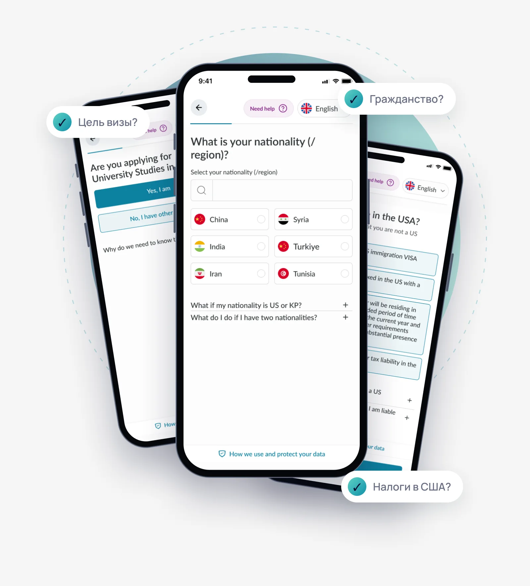
Так выглядит путь пользователя: на каждом экране один вопрос, ответ определяет следующий шаг.
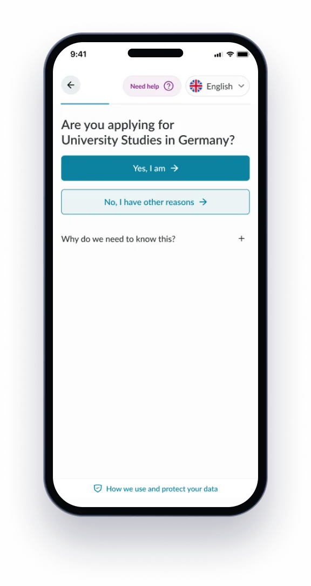
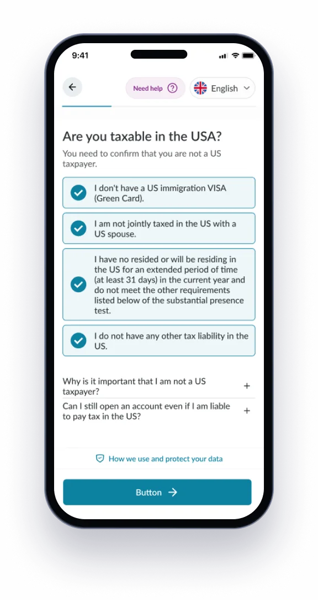
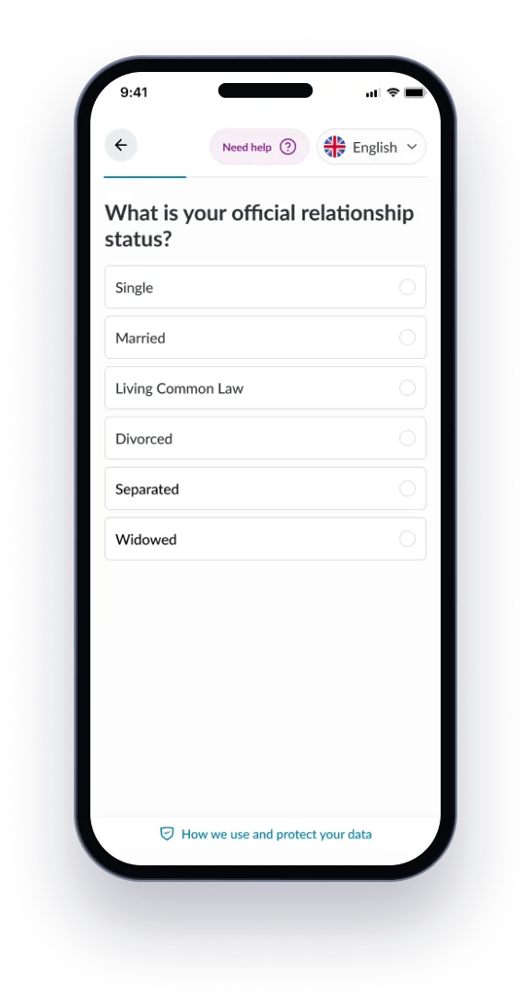
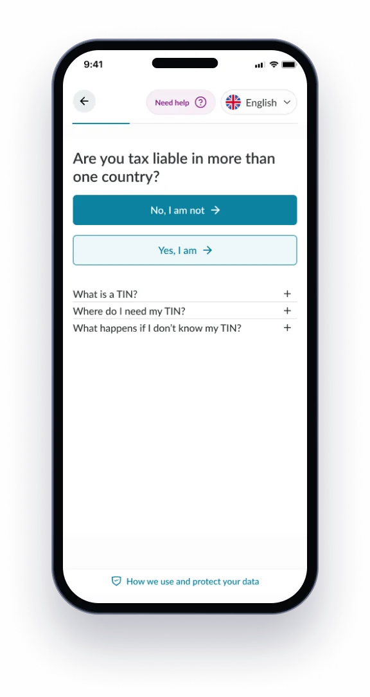
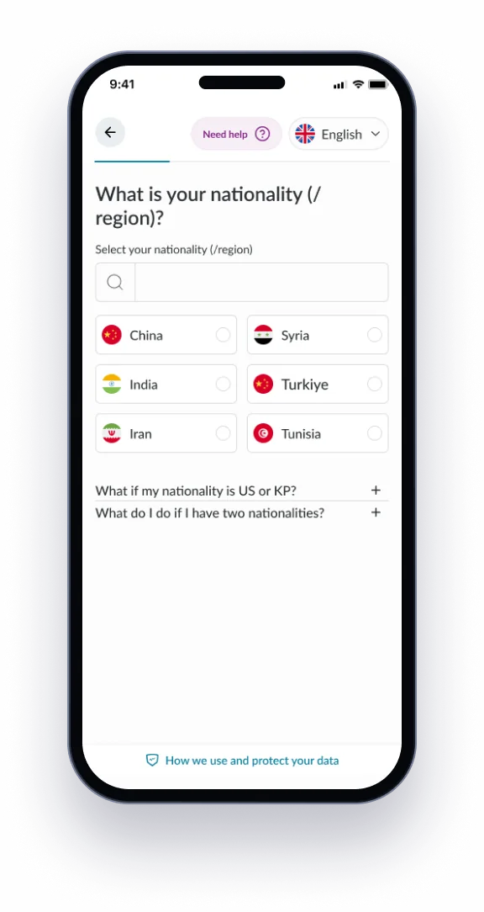
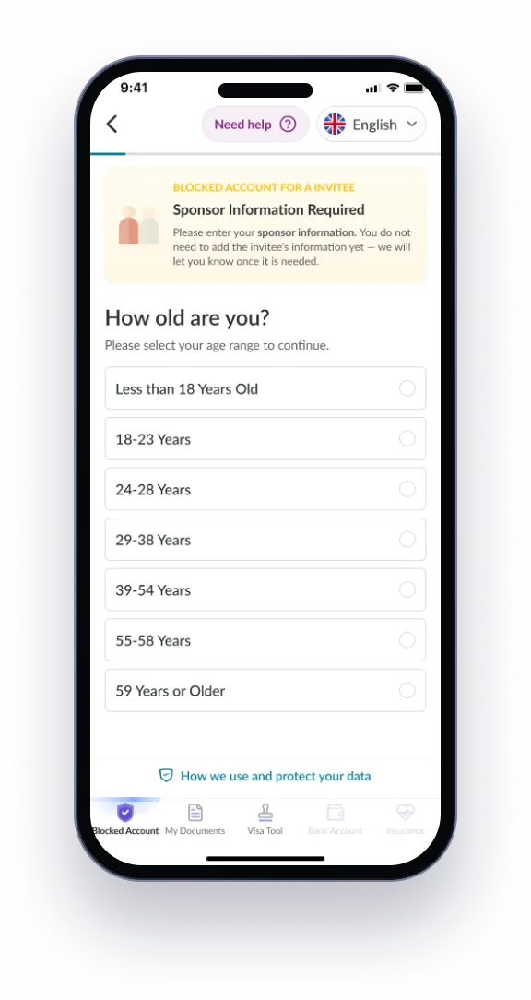
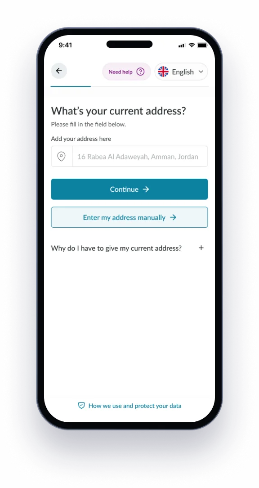
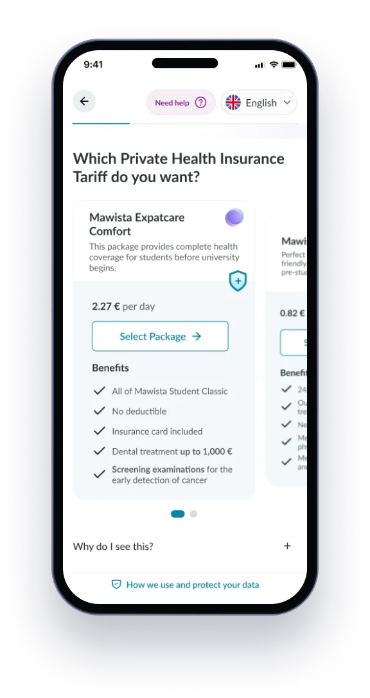
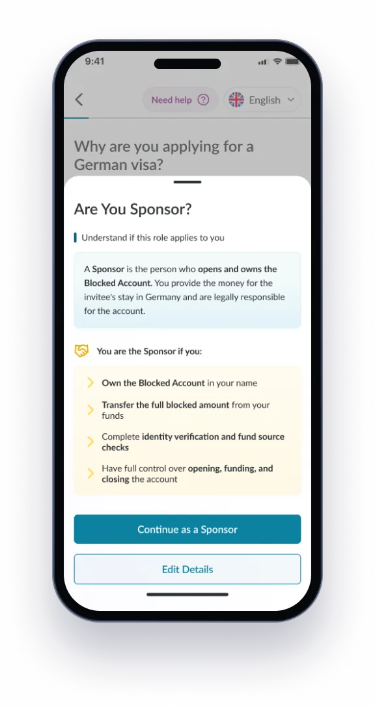
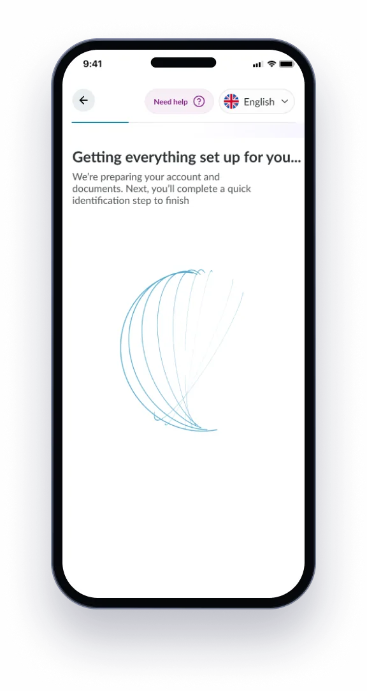
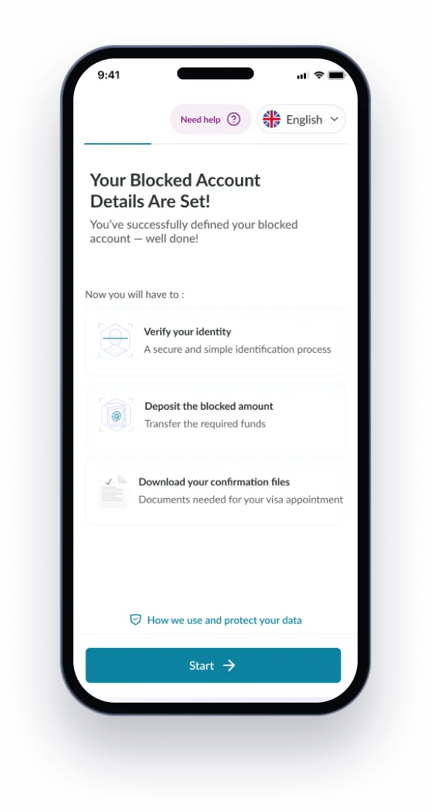
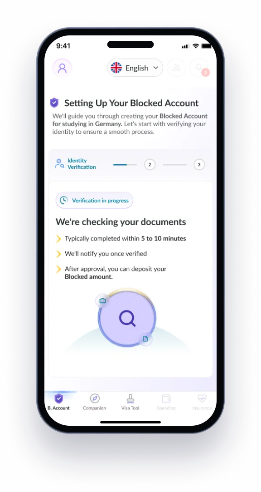
Раздел 01 / 05
Продукт, роль, проблема старой формы и цель
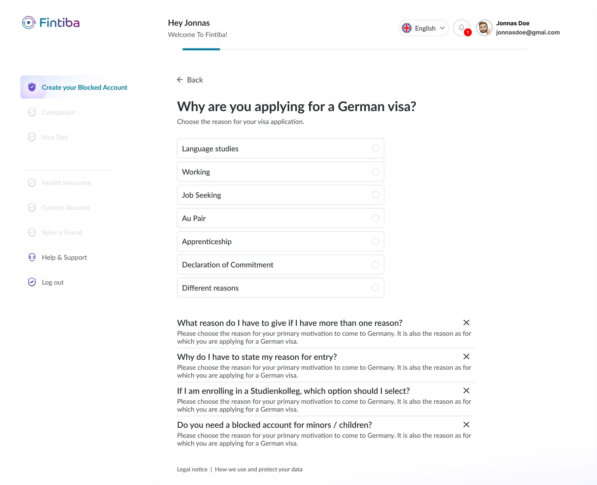
Продукт
Нужен для немецкой визы. Клиенты — иностранцы, которые едут в Германию учиться, работать или искать работу. Пока анкета не заполнена, счёт не открыть.
19–28
экранов в зависимости от ответов, после регистрации
Сценарии
Студент, спонсор (открывает счёт за другого) и несовершеннолетний (открывает родитель)
Моя роль
Я отвечала за флоу анкеты: порядок вопросов, условные ветки и экраны для Web и приложения. Первые полгода работала одна, потом подключился senior-дизайнер — решения мы обсуждали вместе, флоу проектировала я. Запуск — лето 2024 года. Ещё два года я дорабатывала флоу и перевела его на дизайн-систему.
Команда
Формат «один вопрос на экране» предложил product owner, он же подготовил тексты FAQ. Тексты кнопок написала я. Решения обсуждали с product owner, senior-дизайнером и разработчиками.
Что входило в мою зону ответственности на этом флоу.
Разобрала онбординг четырёх конкурентов, вместе с product owner смотрели воронку PostHog.
Разбила длинную форму на шаги: один вопрос на экране.
Описала, какой вопрос появляется после какого ответа и где флоу заканчивается.
Каждый шаг спроектирован для десктопа и для нативного приложения, логика совпадает.
Обсуждала решения с product owner, senior-дизайнером и командой; флоу дорабатывался всё время.
Старая анкета: длинная форма на двух страницах, вопросы в два столбца.
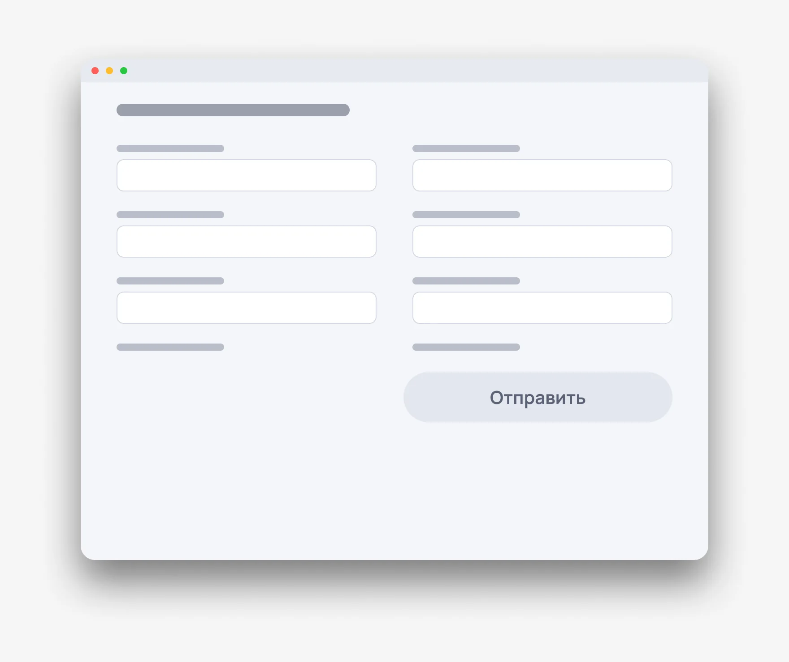
01 · Форма
Все вопросы шли в два столбца, страницу нужно было долго прокручивать. На второй странице — e-mail и код подтверждения.
02 · Несовершеннолетние
Нужно было перейти на другую страницу и заполнить всё заново.
03 · Подсказки
Были не везде и только при наведении на значок «i». FAQ не было.
04 · Воронка · PostHog
Пользователи не доходили до конца формы. Вместе с product owner мы смотрели воронку в PostHog по полям формы. Страховку часто пропускали: из формы было непонятно, зачем она нужна.
Старый интерфейс не сохранился, поэтому здесь схема, а не скриншот. Цифр воронки в кейсе нет.
Цель дизайна
Критерии удачного решения: пользователь видит, на каком он этапе; видит только вопросы своей ситуации; может вернуться и исправить ответ; проходит одну и ту же логику в Web и приложении.
Сократить анкету было нельзя: все вопросы обязательны для открытия счёта. Задача — не убрать вопросы, а помочь пройти их до конца без ошибок.
Раздел 02 / 05
Конкуренты и воронка старой формы
Задачу поставил product owner. Перед проектированием я собрала три источника, чтобы понять, что менять в старой анкете.
| Expatrio | Coracle | EDUBAO | Studely | Fintiba до | Fintiba после | |
|---|---|---|---|---|---|---|
| Формат онбординга | один вопрос на странице | 2–3 вопроса на странице | одна страница | одна страница | длинная форма, 2 страницы | один вопрос на странице |
| Страховка в онбординге | ✓ | ✕ | ✕ | ✕ | есть, без объяснений | ✓ с объяснением и FAQ |
Вывод 1
Из четырёх конкурентов формат «один вопрос на экране» был только у Expatrio. Product owner предложил взять его за основу. Моей задачей было уложить в этот формат все обязательные вопросы и ветки Fintiba.
Вывод 2
Страховка в старой форме была, но без объяснения, что это и зачем. По воронке PostHog её часто пропускали. В новом флоу страховка — отдельный шаг с тарифами, FAQ и вариантом «Decide later».
Раздел 03 / 05
Ключевые решения, устройство шага и ветки
Четыре главные проблемы старой формы и что я сделала с каждой.
Вопросы в два столбца, прокрутка, регистрация в конце
На экране только текущий вопрос. Регистрацию перенесли в начало флоу после A/B-теста product owner.
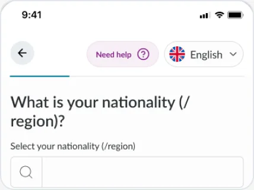
Другая страница и повторное заполнение
Младше 18 — в том же флоу, с пояснением: счёт открывает родитель.
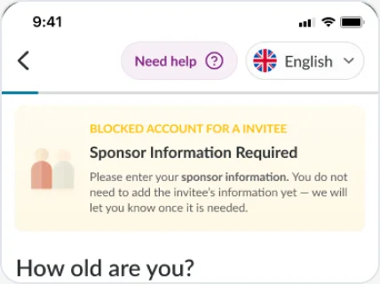
Только при наведении на «i», FAQ не было
FAQ под каждым вопросом и кнопка Need help на всех шагах.
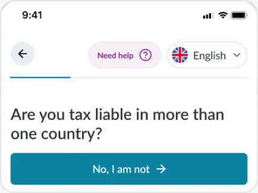
Было непонятно, что это и зачем
Тарифы карточками, пояснение и FAQ. Шаг можно отложить через Decide later.
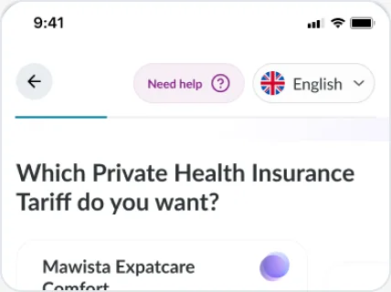
На примере выбора гражданства.
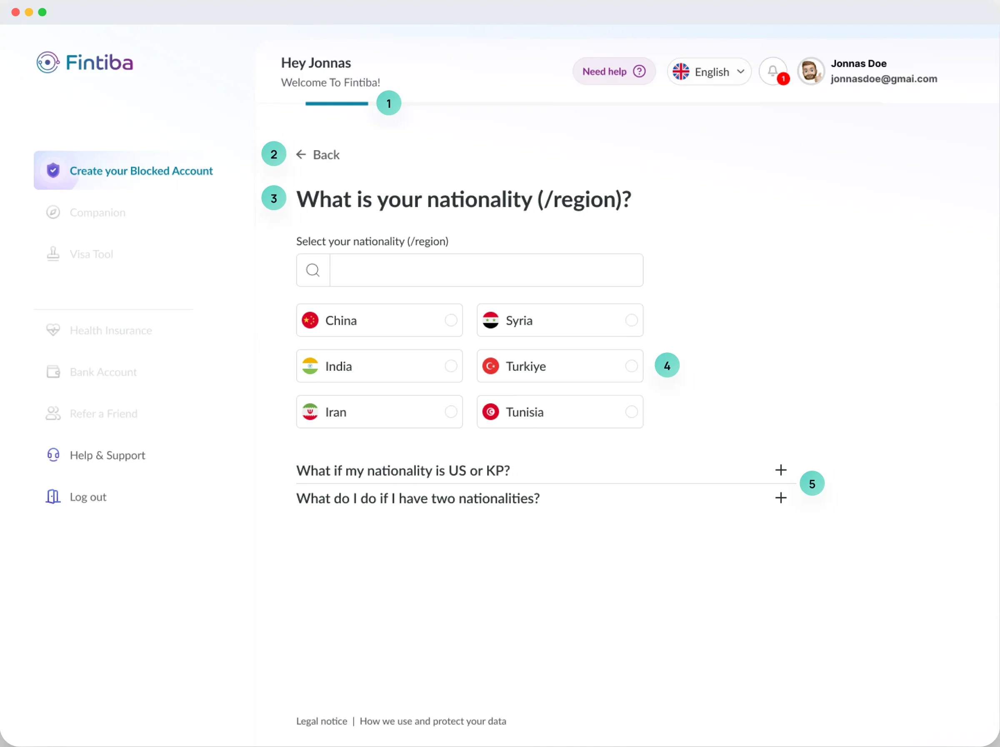
Экран можно листать вбок →
Показывает, какая часть анкеты пройдена.
Возвращает к предыдущему вопросу анкеты.
Один понятный вопрос на странице, без лишнего текста.
На экран вынесены наиболее частые страны, остальные находятся через поиск.
Частые вопросы раскрываются под полем и не уводят с экрана.
Я описала, какой вопрос появляется после какого ответа. Главная развилка — доступ к паспорту. Без паспорта пользователь вводит данные вручную. С паспортом указывает только диапазон возраста: дальше он фотографирует паспорт в проверке личности Onfido, и дата рождения обновляется автоматически.
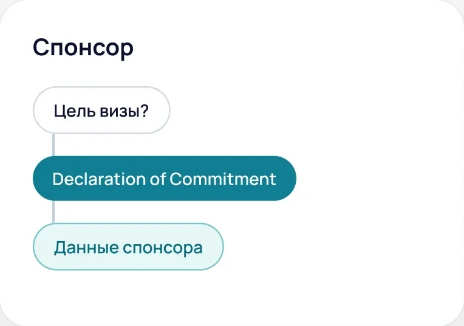
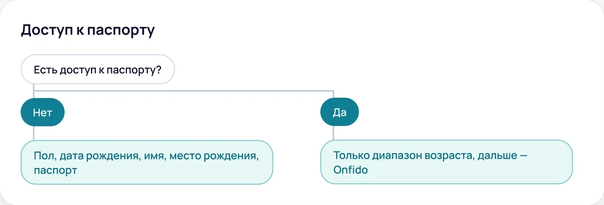
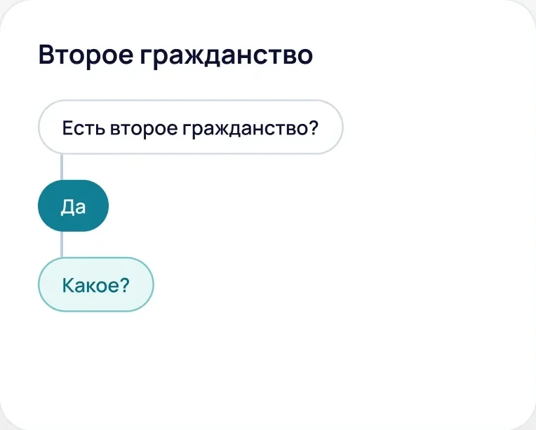
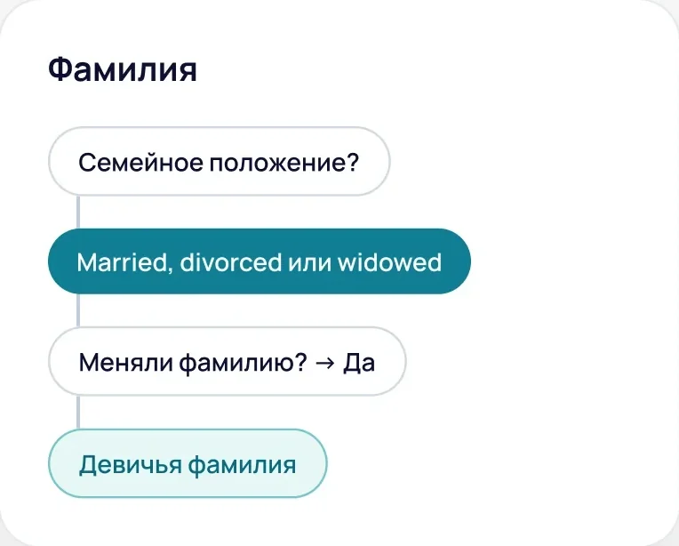
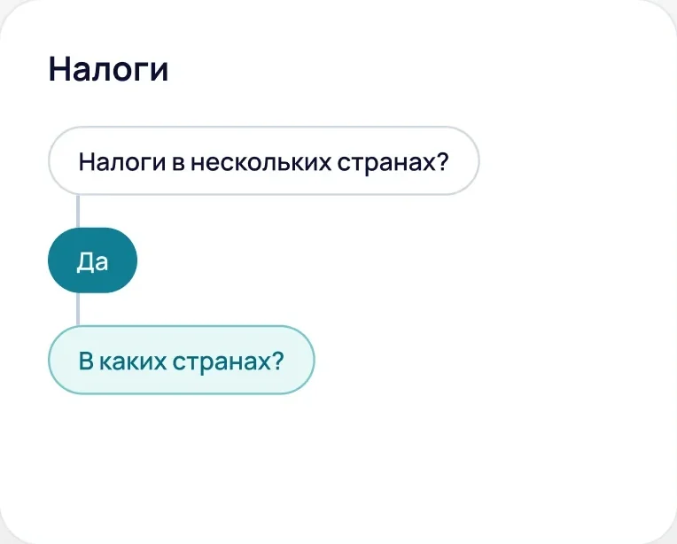
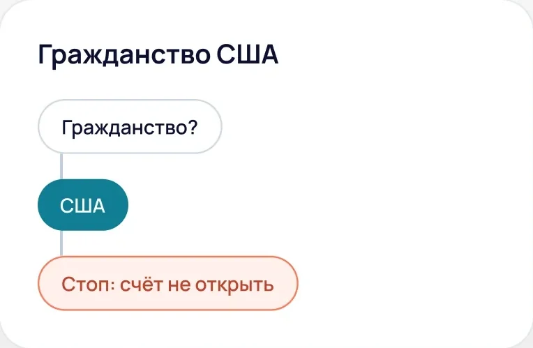
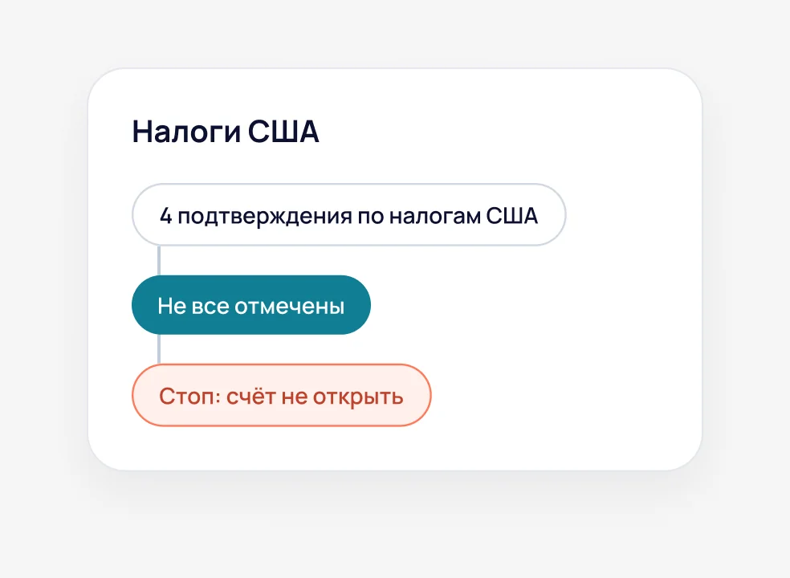
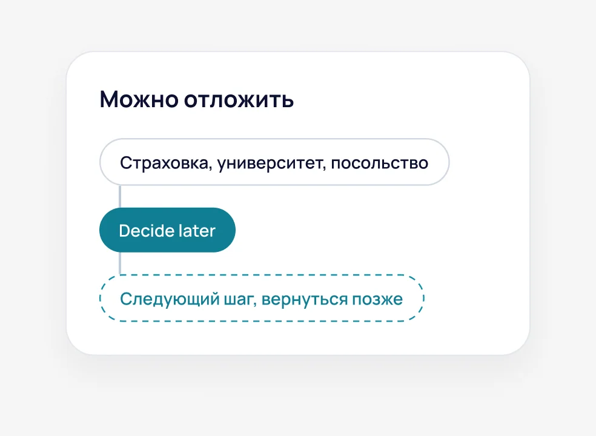
Раздел 04 / 05
Вход, граничный случай, Web и приложение, финал флоу
Онбординг начинается с выбора продукта: «Open a Blocked Account» ведёт к регистрации (e-mail или Google) и коду подтверждения.
Экран входа проектировал другой дизайнер, я его дорабатывала.
На шаге «Are you taxable in the USA?» пользователь подтверждает четыре условия своего налогового статуса в США.
Кнопка «I confirm that I am not a US tax resident» остаётся неактивной. Fintiba не открывает счета налоговым резидентам США, поэтому для них флоу здесь заканчивается. Этот шаг видят все пользователи.
Под формой — FAQ: почему это важно и можно ли открыть счёт при налоговых обязательствах в США.
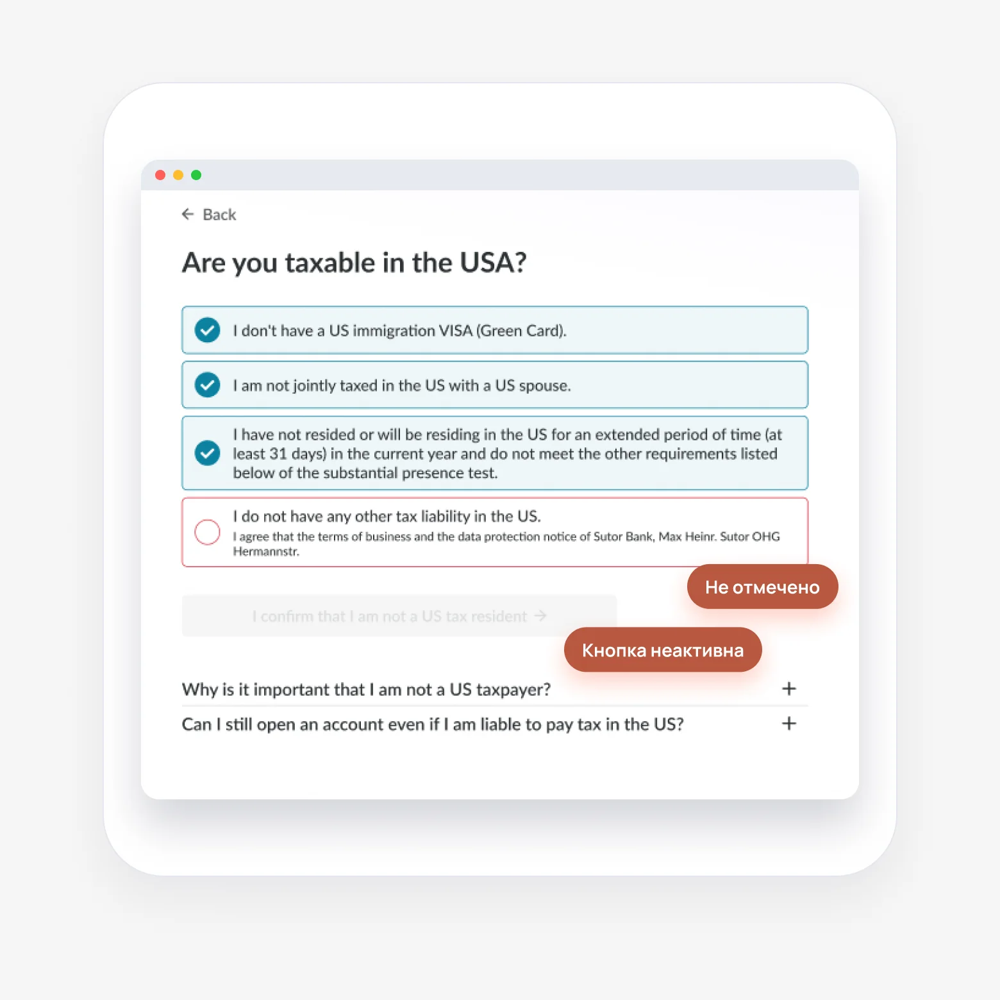
Логика в Web и приложении одна. Единственное отличие: в приложении нет больших информационных плашек в ветках спонсора и несовершеннолетнего.
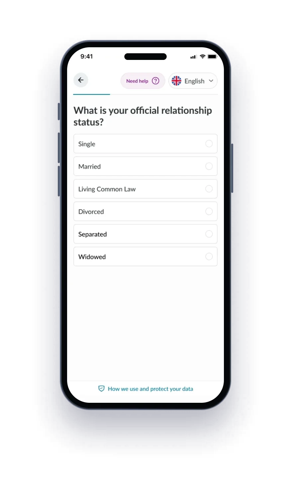
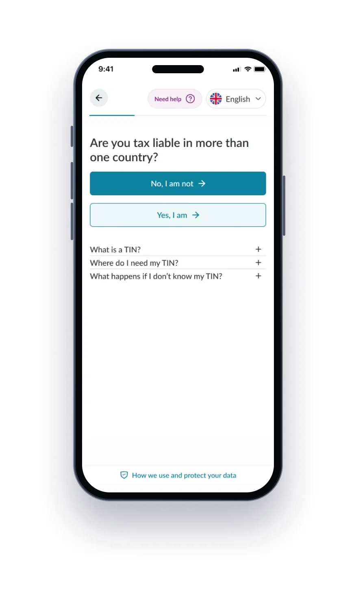
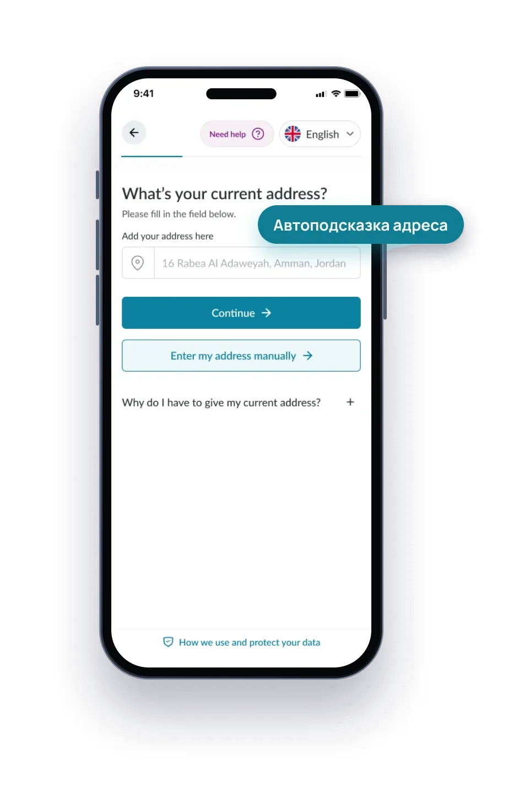
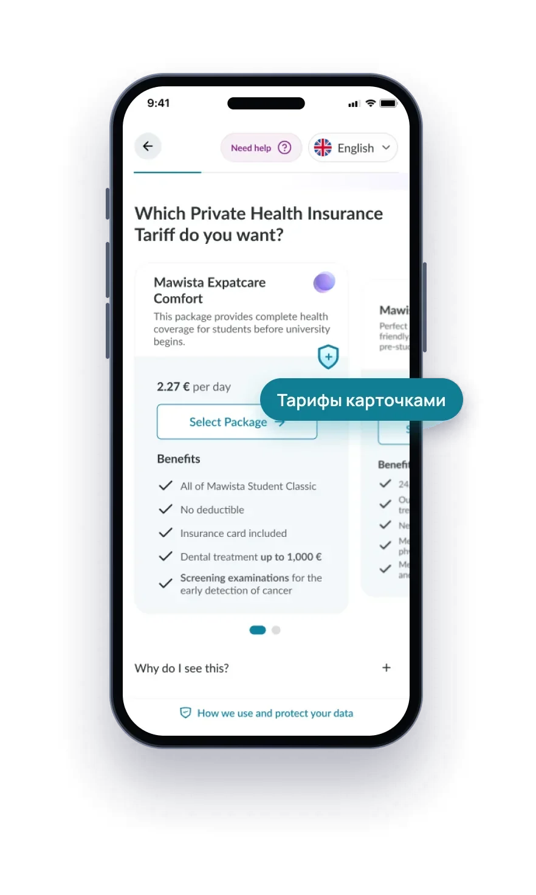
Листайте экраны вбок →
После последнего вопроса анкета заканчивается. Пользователь видит экран подготовки счёта, затем список следующих шагов: подтвердить личность, внести сумму, скачать документы для визы.
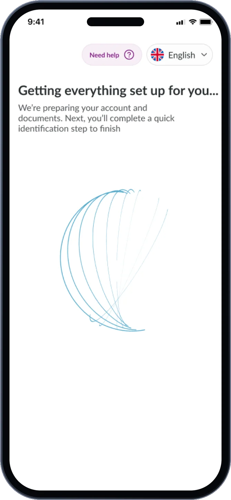
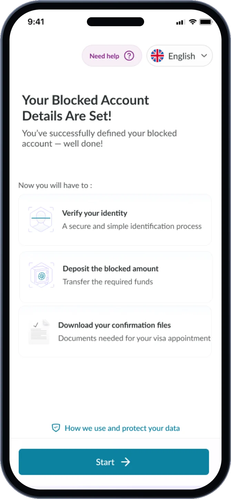
Листайте экраны вбок →
Раздел 05 / 05
Итоги, выводы и что дальше
Флоу запустили в продакшн летом 2024 года в Web и приложении.
«Настройка аккаунта заняла всего 10 минут»Sair Khan, отзыв на Trustpilot, 28.08.2026 (перевод с английского)
В обязательной анкете вопросы не убрать. Я работала с порядком вопросов, объяснениями рядом с полем и ветками, чтобы пользователь видел только свои вопросы.
Схема «вопрос → ответ → следующий шаг» помогала держать одну логику в Web и приложении.
Ранние обсуждения помогали учесть технические ограничения до передачи макетов.
Дальше
До запуска договориться с product owner о метриках: доля начавших и завершивших анкету, шаги с наибольшим оттоком, время заполнения отдельно от проверки личности. Проверить флоу на юзабилити-тесте с пользователями разных сценариев: студент, спонсор, родитель.